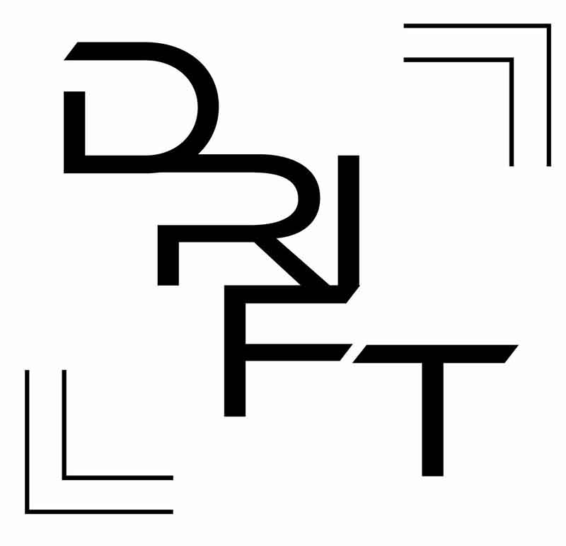
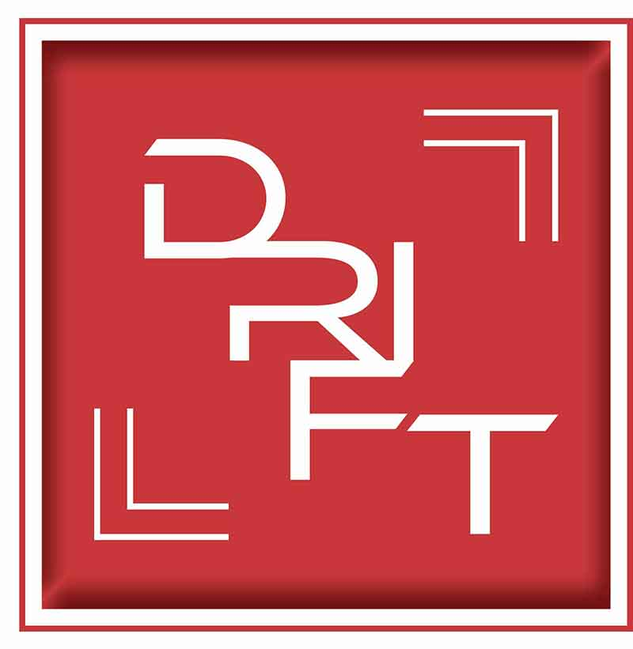

DRIFT
Design System
Logo
DRIFT’s logo was built around the Ethnocentric typeface. Its strong visual identity did most of the heavy lifting, needing only precise adjustments in placement and direction to bring the concept to life.
Color
Red was chosen for its strong visual presence and immediate association with speed, power, and performance. Commonly linked to high-performance automotive branding, like Ferrari, this shade of red helps establish an energetic and attention grabbing identity within the automotive space.
Hex Code: #c63938

